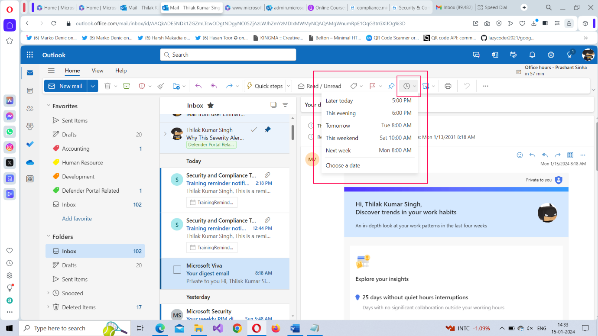

Microsoft 365 Outlook Basics II
Now that you know how to create and respond to mails in Outlook, let’s dive deep and understand the various actions you can take on a specific mail like moving it to a specific folder, flagging it as important, grouping it under a specific category etc.,
Using the Microsoft 365 Outlook Toolbar
The outlook 365 toolbar appears when you select a specific mail. It contains many options that help you declutter your inbox in one way or another. Let understand them one by one.
- New mail dropdown – Outlook 365 is not just for sending/receiving mails. It helps you to setup meetings and manage outlook groups among other things. So, if you click open the New mail dropdown, you’ll see some more options – of which Mail, Event and Group are the most important - as shown in the image.
- To understand how Outlook Events can be configured, read Microsoft 365 Outlook Basics III.
- To understand how Outlook Groups can be configured, read Microsoft 365 Outlook Basics IV.
- Delete dropdown – This is not only for deleting mails but also contains another option called Ignore. When you choose to Ignore a mail or conversation thread, you are training the AI model to Ignore not only the selected mail, but also future mails belonging to the same thread.
- Archive – This sends the selected mail to the Archive folder. In case of accidental archiving, you can always move the mail back to your Inbox.
- Report dropdown – This helps you report phishing and junk mails to Microsoft. When you do this, you are not just reporting an issue to Microsoft but training their AI model to prevent unnecessary mails from reaching your inbox.
- Sweep – This helps you sweep messages in bulk (from a specific sender) to another folder; especially useful if you want to ‘junk’ or ‘delete’ mails you deem unnecessary; but can also come in handy for segregating important mails into another folder. You also get to choose the kind of messages you wish to sweep – past, present or future – depending on your requirements (as shown in the image below).
- Move to dropdown: This helps you move the selected mail to a different folder. By default, the Archive and Deleted Items folder get listed, but you can move the mail to other folders as well by searching for them. You can also create a new folder and move the selected mail to that using the Create new folderoption.
- Reply and Reply All – Both help you reply to the selected message. You also have reply and reply options within the mail as shown in the Microsoft 365 Outlook Basics I article.
- Forward Dropdown – The forward dropdown contains 2 options: Forward and Forward as Attachment. While both help you in forwarding a message to others, the second option forwards the message as a downloadable attachment as shown in the image 2.
- Quick Steps – This helps you apply special rules to incoming mails based on certain criteria you setup. For example, you could configure quick steps to move mails from a particular sender to a specific folder. But the drawback when this feature is that these rules have to be applied manually by you for each and every mail. For this reason, Inbox rules (that support automation) are preferred over quick steps rules. Note: Read How to Set Up Quick Steps for more info.
- Read/Unread – This helps you mark mails as read or unread. Unread messages appear darker than read messages to grab your attention. You can also mark mails to be attended within the working day as Unread so that they can be responded quickly.
- Categories or Label: This helps you categorize (or label) the selected mail. By default, you have color-based categories (as shown in the image). But you can create new categories of your own and delete categories that don’t suit your requirements.
- Flagging a Mail: This helps you flag the selected mail. You can flag important mails so that they appear different from other mails and can be accessed easily using the filter dropdown. Once a mail is flagged as important, a red flag appears beside it.
- Pinning a Mail: This helps you pin the selected mail at the top of your inbox so that you don’t miss it. You can pin mails that need immediate attention. You can pin multiple mails. All of them would appear the at the top of your inbox as shown in the image.
- Snoozing a Mail: This allows you to snooze mails that don’t require immediate attention. Snoozed mails are moved to the Snoozed folder and become available in your inbox again at the date and hour you specify while snoozing the mail. 
- Retention Labels: This allows you to apply retention policy to the selected mail. Retention policies helps you decide how long the mail stays in your inbox before gets deleted. There is a default policy – Use parent folder policy – configured for your mails which you can modify if required.
- Print: This helps you print the mail.
- Three dots icon or More Option:The following options are available when you click this icon: Block, Rules, Meeting, Discover Groups and Customize as shown in the image. Block helps you block the sender. Rules helps you configure Microsoft 365 Outlook Inbox Rules that keep your inbox sorted. Meeting helps you set up Outlook meetings – something you can do from within the mail itself as discussed in the Respond with Meeting option in the Microsoft Outlook Basics I article. Discover Groups helps you discover (and join) the various Microsoft 365 Outlook Groups available in your organization. And Customize helps you customize the buttons – add or delete them – available in the Outlook 365 toolbar.
- Layout: The tiny dropdown you see besides the Three dots icon helps you modify the toolbar’s layout. It contains 2 options: Classic ribbon and Simplified ribbon. Simplified ribbon is the default option.
Note:

Note: When you try to Ignore a mail by selecting Delete >> Ignore option, you get a confirmation message which clearly explains what Ignore does.
Note: You can also create a new folder and sweep messages into them using the Create new folder option as shown in the image.


To add a new category, select the New Category option. This opens the Create new category box as shown in the image. Provide a name and color code for the category and save it.
To manage existing categories, select the Manage Categories option. This opens the Categories page (as shown in the image). Here, you can create, edit, delete and mark categories as favorite.
Categories marked as Favorites appear under the Favorites section as shown in the image.

If you like the old Outlook’s toolbar, you can switch to Classic ribbon. The classic ribbon is displayed in the image below.

Right Click Menu and Options
Most of the options discussed above are also available in the menu that appears when you right click a mail. Copy and Move are the only two new additions. Copy helps you copy the mail to another folder; whereas Move helps you move the mail to another folder. The Move all message from option is a redirection to Sweep messages feature we saw earlier.
Note: Note: While Copying and Moving mails, you are also presented with the option of creating a new folder as the destination.

Note: You are also presented with another menu on the right side within the mail with pretty much the same option rearranged in a different order.
Left Pane Apps
The left pane lists a few apps that are closely knit with Microsoft 365 Outlook and work together.
- Calendar – This lists all the meetings, tasks and appointments you have in the month. You can also create meetings (by double-clicking on a specific date), configure work hours, configure your availability schedule, share your calendar with others etc.,
- People – This lists all your contacts who might have come in touch with via email, groups you are a part of, groups that might have contacted you and more. You can also create your own contacts and maintain several different contact lists for your reference.
- Groups – This lists all the groups you are part of – be it outlook based group or some other group – and groups you can join as a member. You can also perform other actions like mailing to your groups, checking for files and events associated with the groups, look for group members etc.,
- Todo App – This lets you add your daily tasks or to dos in the Microsoft 365 To Do application. Read Working with To Do App in Microsoft 365 to know more.
- OneDrive – This leads you to the Microsoft 365 OneDrive app where all your Microsoft 365 files are stored, including the ones you downloaded via Microsoft 365 Outlook emails.
- More apps - This options leads to you other Microsoft 365 apps like Bookings, Excel, OneNote, PowerPoint etc.,
Note: Read Microsoft 365 Outlook Groups section to know more about Outlook groups.

What's Next?
In the next article, let’s dig deep into Microsoft Outlook 365 meetings and understand how you can set them up so that you can collaborate and work with your colleagues.